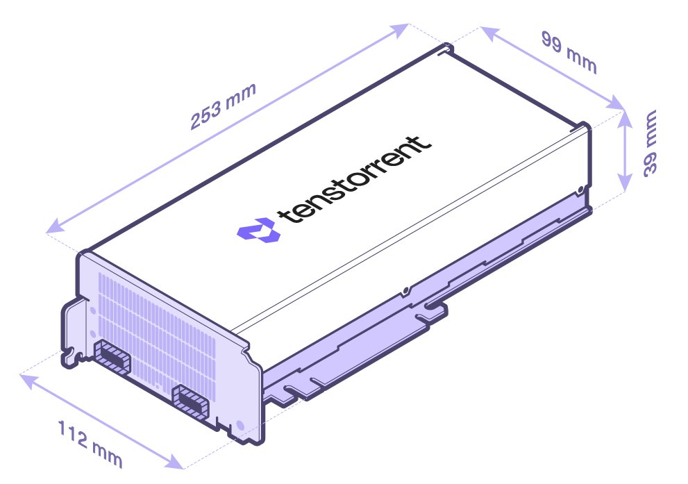

Specifications/Requirements
Wormhole™ Tensix Processor
The Wormhole™ n150d, n150s, n300d, and n300s Tensix Processor add-in boards are built using the Tenstorrent Wormhole™ Tensix Processor:
Tensix Core Count: 80
SRAM: 120 MB (1.5 MB per Tensix Core)
Memory: 12 GB GDDR6, 192-bit memory bus
Card Comparison Table
NOTE: The n150s and n300s add-in cards come with a heatsink for passive cooling in systems which can provide sufficient forced airflow to the card. If your system does not (for example, a desktop workstation), installing the bundled Active Cooling Kit is required; we strongly recommend desktop workstations use the n150d and n300d add-in cards which are designed for desktop deployment. If the card isn’t sufficiently cooled, performance will be substantially reduced to stay in a safe operating temperature range and you risk damage to the card.
Specification |
n150d |
n150s |
n300d |
n300s |
|---|---|---|---|---|
Part Number |
TC-02002 |
TC-02001 |
TC-02004 |
TC-02003 |
Wormhole™ ASICs |
1 |
1 |
2 |
2 |
Tensix Cores |
72 |
72 |
128 (64 per ASIC) |
128 (64 per ASIC) |
AI Clock |
1 GHz |
1 GHz |
1 GHz |
1 GHz |
SRAM |
108 MB |
108 MB |
192 MB (96 MB per ASIC) |
192 MB (96 MB per ASIC) |
Memory |
12 GB GDDR6 |
12 GB GDDR6 |
24 GB GDDR6 |
24 GB GDDR6 |
Memory Speed |
12 GT/sec |
12 GT/sec |
12 GT/sec |
12 GT/sec |
Memory Bandwidth |
288 GB/sec |
288 GB/sec |
576 GB/sec |
576 GB/sec |
TeraFLOPS (FP8) |
262 |
262 |
466 |
466 |
TeraFLOPS (FP16) |
74 |
74 |
131 |
131 |
TeraFLOPS (BLOCKFP8) |
148 |
148 |
262 |
262 |
TBP (Total Board Power) |
160W |
160W |
300W |
300W |
External Power |
1x 4+4-pin EPS12V |
1x 4+4-pin EPS12V |
1x 4+4-pin EPS12V |
1x 4+4-pin EPS12V |
Connectivity |
2x Warp 100 Bridge |
2x Warp 100 Bridge |
2x Warp 100 Bridge |
2x Warp 100 Bridge |
Internal Chip-to-Chip |
N/A |
N/A |
200G |
200G |
System Interface |
PCI Express 4.0 x16 |
PCI Express 4.0 x16 |
PCI Express 4.0 x16 |
PCI Express 4.0 x16 |
Cooling |
Active (Axial Fan) |
Passive |
Active (Axial Fan) |
Passive |
Dimensions (WxDxH) |
52.2mm x 256mm x 111mm |
36mm x 254mm x 111mm |
52.2mm x 256mm x 111mm |
36mm x 254mm x 111mm |
Dimensions (w/ Cooling Kit) (WxDxH) |
N/A |
36mm x 393.5mm x 114mm |
N/A |
36mm x 393.5mm x 114mm |
*For connecting to Tenstorrent Wormhole™-based cards only.

n150s/n300s without Active Cooling Kit
Connectivity
Wormhole™ cards include two different methods for interconnecting cards. (n150s/n300s pictured; n150d and n300d will have the same ports and bridges.)

The Warp 100 notches are for attaching internal Warp 100 bridges between Wormhole™ cards.
The two QSFP-DD ports are active and support 200G connectivity between cards and/or Wormhole™-based systems/servers.
Data Precision Formats
The Wormhole™ Tensix Processor supports the following data precision formats:
Format |
Bit Depth |
|---|---|
Floating point |
FP8, FP16, BFLOAT16 |
Block floating point |
BLOCKFP2, BLOCKFP4, BLOCKFP8 |
Integer |
INT8 |
Unsigned Integer |
UINT8 |
TensorFloat |
TF32 |
Vector |
VTF19, VFP32 |
Minimum System Requirements
Part |
Requirement |
|---|---|
CPU |
x86_64 architecture* |
Motherboard |
PCI Express 4.0 x16 slot |
Memory |
64 GB |
Storage |
100 GB (≥2 TB recommended) |
Power Connectors |
4+4-pin EPS12V |
Total Board Power |
Up to 160W (n150d/n150s) / 300W (n300d/n300s) |
Operating Temperature Range (Die) |
0C - 75C |
Operating System |
Ubuntu version 22.04 (Jammy Jellyfish) ** |
Internet Connection |
Required for driver and stack installation. |
** CPU core count and number of sockets will depend on the amount of host preprocessing and post-processing required before and after the accelerator processing.*
**To check your version, type cat /etc/os-release.
Environment Specifications
The Wormhole™ Tensix Processor add-in boards are designed to meet these environmental specifications:
Specification |
Requirement |
|---|---|
Operating Temperature Range |
10°C/50°F - 35°C/95°F |
Storage Temperature Range |
-40°C/-40°F - 75°C/167°F |
Elevation |
-5 ft. to 10,000 ft. |
Air Flow (without Active Cooling Kit) |
≥30 CFM @ up to 35°C/95°F |